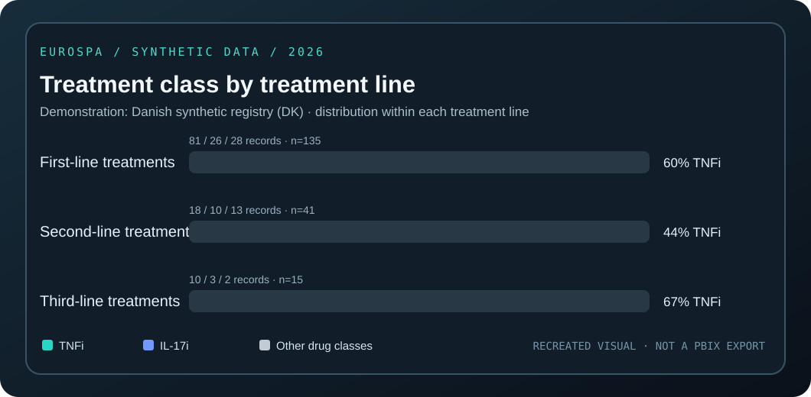

FEATURED PROJECT · 2026 · SYNTHETIC DATA ONLY
Turning pooled clinical records into clear reporting.
An interactive browser-based recreation of selected EuroSpA Power BI prototype views. The source is an aggregated synthetic workbook; these are illustrative charts, not screenshots of a confidential reporting system or a hosted PBIX file.

Scope note: The underlying project was developed as a Power BI / Python reporting prototype. This independent web demo recreates selected visual ideas using summarized synthetic data. The original Power BI project and pipeline are not yet published in this repository.
01 / INTERACTIVE VISUALS
Registry overview & treatment analysis
Share of the pooled total
All registriesColored segment = selected registry; grey segment = all other registries. The percentage refers to the global total.
Drug class by treatment line
All registriesWithin-line percentages. The light-grey group includes other biologic and targeted classes, not other registries.
02 / TABLE OUTPUT
Registry summary
| Country | Registry code | Patients | Treatments | Visits |
|---|
03 / METHOD & SOURCES
What this example demonstrates
Approach
Aggregated counts from a synthetic pooled registry dataset are linked to country filters. Treatment-line groupings are derived from the synthetic treatment summary, and shares are calculated against the correct denominator.
What was prototyped
Registry Overview, treatment line distributions and country filtering. The original Power BI workflow also separates report creation from any future authenticated country-specific portal.
Privacy & provenance
Only synthetic aggregated values are published. No real patient-level rows, private registry records, hospital access tokens, or internal Power BI links are included.